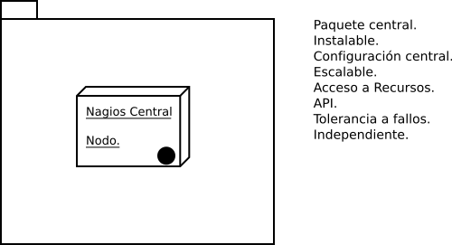
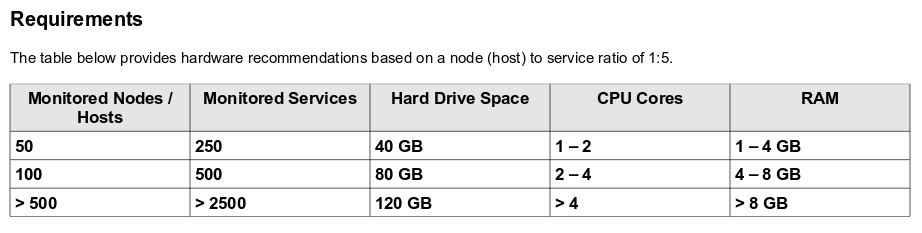
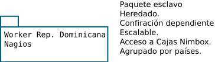

Posible arquitectura de Nimbox.
Diseño

Diseño.
Basado en: "Service-Oriented Architecture.
¿Por qué SOA?
Básicamente porque, queremos un sistema distribuido.
De monitoreo...Ahora en serio...
- Independencia.
- Reemplazo de funciones.
- Aislar problemas.
- Facilidad.
- Minimización del riesgo de tiempo de inactividad.
- Toma de decisiones.
¿Cómo sería la estructura?
Nodo central.
Compuesto por un Nagios Central.
¿Por qué?
- Independencia.
- Hacer un paquete único.
- Escalabilidad Horizontal.
- única configuración.
- Disponibilidad.
- Según yo.
Contendrá:
- Docker
- Kubernetes
- Nagios Por ahora...
- *Pasivo*
- Plugins (Nagios)
¿Por qué de lo anterior?
Docker: La portabilidad. Separación. Posibilidad de trabajar diferentes versiones de apps...
Kubernetes: Orquestación. Es quien manejará la escalabilidad. Integración con Docker.
Nagios: En algún momento Nimbox confió en el...
Requerimientos:
¿Cómo sería la estructura?
Nodo Worker.
Básicamente, un Nagios hijo.
¿Por qué?
- Independencia.
- Hacer un paquete.
- Escalabilidad Horizontal.
- Configuración dependiente.
- Disponibilidad.
- Según yo.
- Activo.
Contendrá:
- Docker
- Nagios *Activo*
- Plugins (Nagios)
¿Por qué de lo anterior?
Nagios: En algún momento Nimbox confió en el...
La idea es no tener muchas configuraciones regadas.
De esta forma, delegando en Kubernetes, la disponibilidad, conexiones, entre otras, no necesitamos más.
Importante:Aislar problemas.